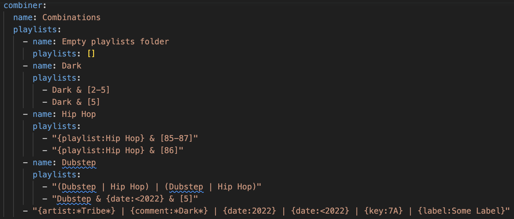

Combine Playlists with Boolean Algebra
In this guide you will learn how to automatically build playlists based off of powerful boolean algebra expressions that apply set operations to tags, playlists, and other selections of your Collection.
Prerequisites
Why combine playlists with boolean algebra?
It may not be commonly known, but Rekordbox already has a very elementary version of this functionality called the "Track Filter":

There are many shortcomings with the Track Filter which make it far inferior to the Combiner:
- Portability
- can only be used on a laptop running Rekordbox (not available on XDJs, CDJs, etc.)
- can only be used with the master database on a laptop (friends plugging in their devices lose access to this feature)
- Operands
- only works on
My Tags, color, rating, key, and a maximum of 6% range from a single BPM value
- only works on
- Operators
- can only apply
ANDandORlogic - can only apply logic to
My Tags - can only apply one of these logic operators per grouping of
My Tags
- can only apply
The Combiner solves all these issues in the following ways:
- Portability
- generates regular playlists which can be exported to a device for use on any system
- Operands
- works on any tag data that
djtoolsknows of (e.g. genres,My Tags, etc.) - includes numerical selector syntax to choose arbitrary rating, BPM, and year values as well as arbitrary ranges of those values
- includes string selector syntax to choose playlists in your Collection as well as artists, comments, dates added, keys, and record labels
- any of the string selectors (except for
date) support wildcard globbing with the*character
- works on any tag data that
- Operators
- adds a
NOToperator to take the set difference - allows you to apply logic operators to any of the operands, not just
My Tags - allows you to construct arbitrarily complex expressions using parentheses to control the order of operations
- adds a
Syntax
- logical operators ("AND", "OR", "NOT"):
&|~
- string selectors (not case-sensative):
{artist:*Eprom*}{comment:*hollaback*}{date:2022}{date:>2021-10-05}{date:<=2020-05}{key:7A}{label:duploc}{playlist: Deep House}
- numerical selectors:
[0][3-5][80][130-150][1973][2013-2023]
- grouping:
()
Let's look at an example playlist to see how the syntax works.
Suppose we want a playlist with tracks that all have the following properties:
- from the years 2000 to 2023
- and have a rating of 5
- and with BPMs in the range 130 to 150
The expression will look this:
[2000-2023] & [5] & [130-150]
Now let's say we want a playlist with tracks that have any one of the following properties:
- have a genre tag called "Jungle"
- or have another tag called "Dark"
- or come from a playlist called "New Years 1999"
- or come from the record label "Dispatch"
The playlist for this set of tracks is expressed like this:
Jungle | Dark | {playlist: New Years 1999} | {label: Dispatch}
Now let's say we want to create a playlist using the other supported string selectors. We're also going to demonstrate the set difference operator ~ which will remove matching tracks from the resulting playlist. This subset of tracks will all have the following properties:
- have at least one of the artists as "Eprom"
- and have been added to the collection after 2010
- and have the words "absolute banger" in the comments
- and not have a major musical key (using Camelot notation)
The playlist for these tracks is written like this:
{artist: *Eprom*} & {date:>2010} & {comment:*absolute banger*} ~ {key:*A}
Finally, let's see how we can create one master playlist from all three of these sub-expressions using groupings to ensure the proper order of operations:
([2000-2023] & [5] & [130-150]) |
(Jungle | Dark | {playlist: New Years 1999} | {label: Dispatch}) |
({artist: *Eprom*} & {date:>2010} & {comment:*absolute banger*} ~ {key:*A})
I hope you see how powerful the Combiner can become when used with a well indexed collection!
How it's done
- Configure your desired playlists for the
Combinerby constructing a boolean algebra expression with the syntax noted above - Run the command
--collection-playlists - Import the
PLAYLIST_BUILDERfolder from the generated collection
Example
As is done in the Build Playlists From Tags how-to guide, we'll start by looking at some simple expressions configured in the pre-packaged collection_playlists.yaml, but this time we'll focus only on the combiner section:
Note that the examples below are trivial ones designed to get 100% code coverage in unit tests.

The combiner configuration specifies a set of name folders with lists of playlists and / or folders inside of them. The leaves of this playlist tree are the actual playlists themselves whose names are boolean algebra expressions that use the syntax noted above to describe how different tags and selectors are to be combined to produce the final playlist of tracks. Valid expressions must contain at least two operands and must have one less operator than there are operands.
Note that, as with the tag playlists, you may provide an override for these playlist names. This can be really helpful since combiner playlists can otherwise have very long names. Here's an example of configuring a playlist name override:
- tag_content: "Dubstep & {date:<2022} & [5]"
name: Pre 2022 High Energy Dubstep
Also note that combiner playlists, like tag playlists, have PlaylistFilter logic and recursive track aggregation applied to them.
Once you've finalized your playlist configuration, run the following command to build the playlists:
djtools --collection-playlists
Now you can import the PLAYLIST_BUILDER folder to load these playlists into your Collection: